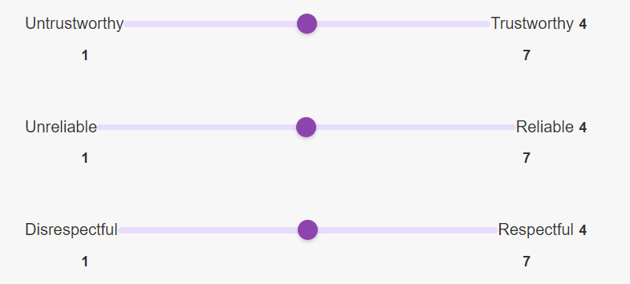

This is a study on intelligent voice assistants aimed at exploring how the accent and gender of a voice assistant influence people's trust. The entire test takes about 8 minutes and is a relaxed process—just enjoy it!
What we need from you:
Click this button to see the consent form
This study aims to explore how the accent and gender of voice assistants affect users' trust in VA systems. Your participation will help us improve the design of voice assistants and enhance user experiences.
The study will be conducted through a voice interaction website and will take approximately 10 minutes to complete. You will interact with different voice assistants, followed by a series of questions and evaluations. Participation is entirely voluntary, and you may withdraw at any time.
All your responses will be processed anonymously and used only for academic research purposes. We will not collect any personally identifiable information (e.g., name, contact details). All data will be securely stored on protected servers and will not be shared with any third parties.
Participation in this study is entirely voluntary, and you may choose to withdraw at any time without providing a reason. Choosing to withdraw will not result in any negative consequences for you. If you have any questions or concerns, please contact the research team:
There are no significant risks associated with this study. By participating, you will contribute to advancing voice assistant technology, which could benefit a wide range of users.
Please create a participant ID for this study by entering your initials (e.g., AB).
This ID will be used to match your responses across different parts of the experiment.
To better understand the results of this study, we would like to collect some basic demographic information about you. Your responses will remain anonymous and will only be used for academic purposes.
In this study, you will:
Use the 1–7 scale, taking “trustworthiness” for example, where 1 = Untrustworthy and 7 = Trustworthy. Please rate honestly based on your impressions.
Before we begin, let's ensure your audio setup is working correctly.
You're using the voice assistant to ask a specified question, and when you're done, the voice assistants will automatically answer the question.
You will hear the answers given to you by the four voice assistants in turn (each played only once), and you will evaluate them in turn.
Please use the voice interface below to ask the following question aloud, click “Start” to begin recording:
“Which is more harmful, staying up late but sleeping more or not staying up late but sleeping less?”
Thank you for completing this study! Your input is incredibly valuable and will help us better understand how people interact with voice assistants and what factors influence trust in these systems.
If you have any questions about this study or would like to know more about our research, please feel free to contact us:
Your participation is greatly appreciated, and we hope you have a wonderful day!